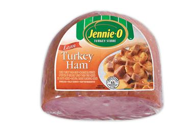

A kind of sandwich topping which is really common.
Turkey ham is a kind of processed meat product made primarily from cooked or cured turkey meat and water, formed into the shape of a ham and often sold pre-sliced. It is a ready-to-eat product that can be consumed cold or heated. wikipedia
The production of turkey ham is highly based on factory machine since it's a kind of pre-procssed topping. Details can be found on wikipedia page. wikipedia
The history of turkey ham as a sandwich topping is realtively short, Turkey ham was developed by Jennie-O and was first introduced to American consumers by the company in 1975. wikipedia
Jennie-O brand turkey ham. Jennie-O first introduced turkey ham to U.S. consumers in 1975.